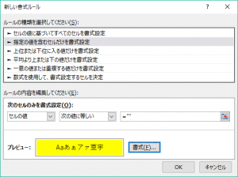
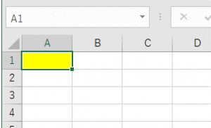
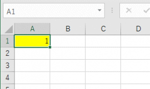

(※ 2016 年 11 月 14 日に Office Support Team Blog JAPAN に公開した情報のアーカイブです。)
こんにちは、Office サポートの町口です。
本記事では新たに確認された、Excel 2016 ですぐに条件付き書式が反映されない問題について説明します。
現象
以下のような条件付き書式を設定したファイルを Excel 2016 で開いた場合、
セルに値を入力しても、条件付き書式がすぐに反映されず、セルの背景色が更新されません。
条件付き書式の例 :
セルに値を設定していない場合にセルの背景色を黄色に設定し、
セルに値が入っているときにはセルの背景色を無色にする。
設定内容詳細は再現手順に記載します。
再現手順
1. Excel 2016 で新規ブックを作成し、A1 セルに以下の内容で条件付き書式を設定します。
[指定の値を含むセルだけを書式設定] で [セルの値] [次の値に等しい] =“” [書式] は黄色の塗りつぶし

2. xls 形式で保存します。
3. 一度ファイルを閉じて、開きなおします。
4. A1 セルは、空なので、黄色の塗りつぶしで表示されています。

5. A1 セルに、「1」等、任意の値を入力します。
結果 :A1 セルが黄色の網掛けのままとなります。
正しくは、セルの塗りつぶしがなくなり、白色で表示されることです。

回避策
xlsx 形式で保存することで回避します。
この回避策は、クイック実行形式 (C2R) と Windows インストーラー形式 (MSI) の両方で有効です。
対処方法 !!2016/11/09 Update!!
クイック実行形式 (C2R) と Windows インストーラー形式 (MSI) のそれぞれについて説明します。
(1) クイック実行形式 (C2R)
========================================
Version 1609 (16.0.7369.2038) で修正しました。
2016 年 10 月 11 日以降、更新プログラム チャネル「Current Channel」および「First Release for Deferred Channel」で Version 1609 (16.0.7369.2038) を受信することができます。
[ファイル] – [アカウント] – [更新オプション] の [今すぐ更新] や ODT を利用して、Version 1609 (16.0.7369.2038) 以上のバージョンに更新してください。
なお、「Deferred Channel」については、次回の更新タイミング 2017 年 2 月の配信を予定しています。
※ ご留意事項
~~~~~~~~~~~~~~~
上記バージョンに更新した場合、以下の別の現象が発生することが確認されております。
詳細は以下の記事を参照してください。
タイトル : Office 2016 のクイック実行版環境で、VBA フォーム上のコントロールが表示されなくなる
URL : http://blogs.technet.microsoft.com/officesupportjp/?p=1025
この問題は、2016 年 11 月 2 日公開の Version 1609 (Build 7369.2054) で対応済みです。
そのため、2016 年 11 月 2 日公開の Version 1609 (Build 7369.2054) 以降をご使用いただくことをお勧めいたします。
(2) Windows インストーラー形式 (MSI)
========================================
KB3127904 で修正しました。
タイトル : MS16-133: Description of the security update for Excel 2016: November 8, 2016
URL : https://support.microsoft.com/ja-jp/kb/3127904
参考情報
クイック実行版と MSI 版との見分け方については、以下の記事を参照してください。
タイトル : クイック実行形式 (C2R) と Windows インストーラー形式 (MSI) を見分ける方法
URL : http://blogs.technet.microsoft.com/officesupportjp/?p=725
更新プログラム チャネルについては、以下の記事を参照してください。
タイトル : クイック実行版 Office 2016 (Office 365 ProPlus) の更新チャネルについて
URL : http://blogs.technet.microsoft.com/officesupportjp/?p=1145
ODT (Office 展開ツール) については、以下の記事を参照してください。
タイトル : 概要: Office 展開ツール
URL : https://technet.microsoft.com/ja-jp/library/jj219422.aspx
本情報の内容 (添付文書、リンク先などを含む) は、作成日時点でのものであり、予告なく変更される場合があります。